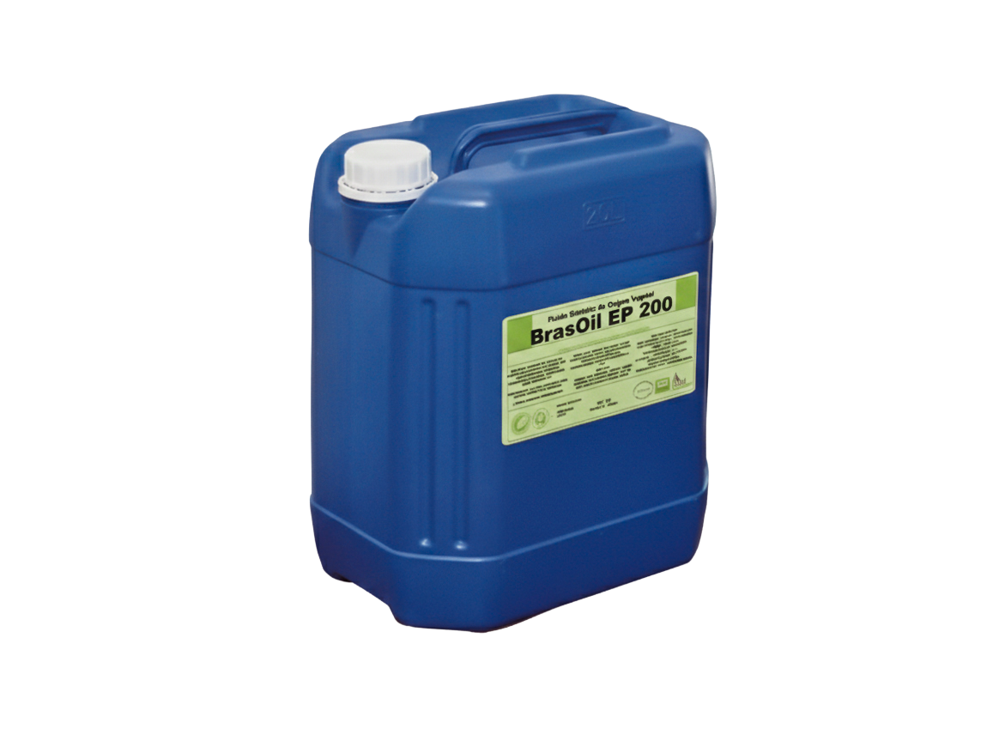
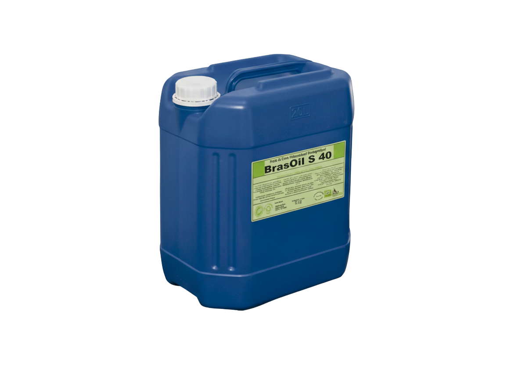
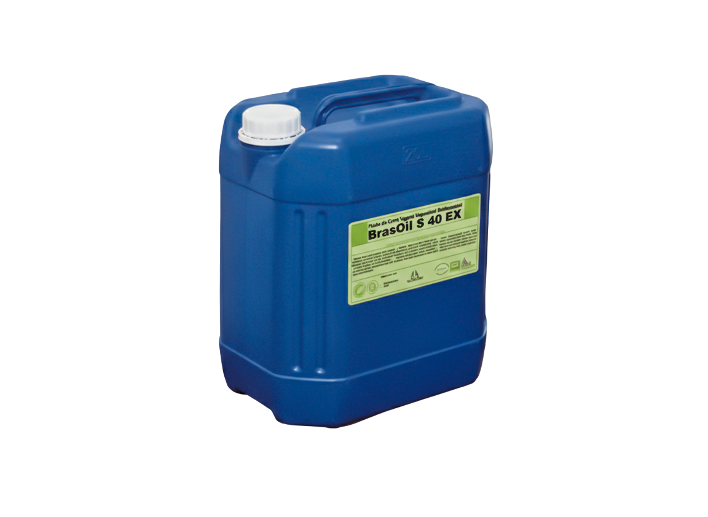
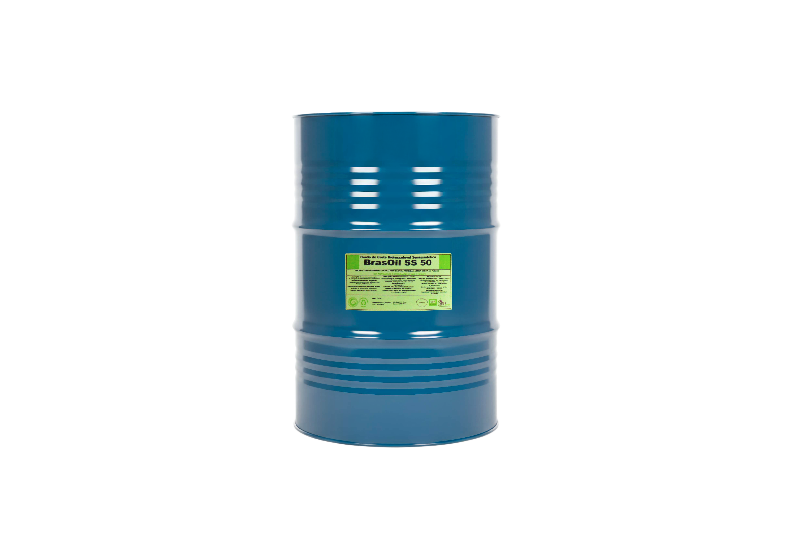
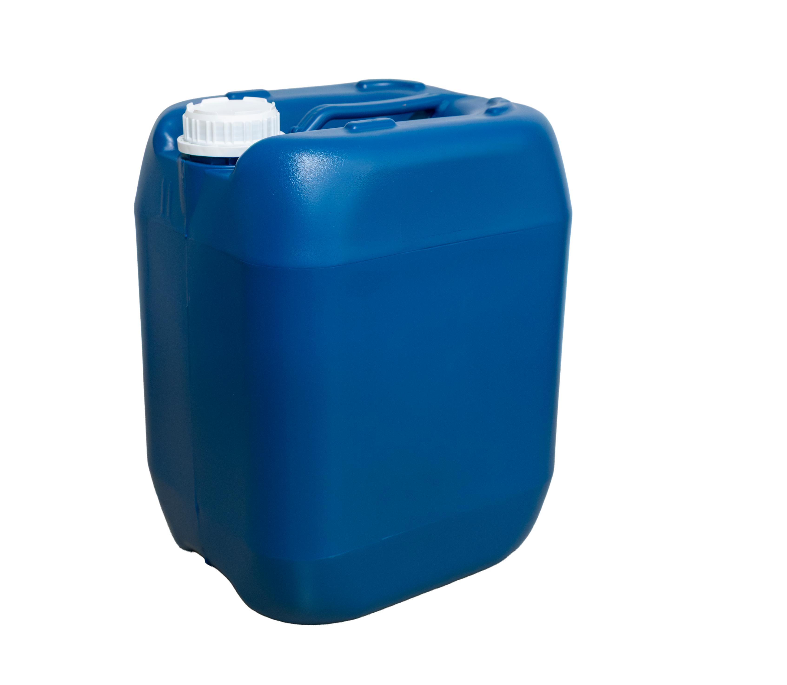
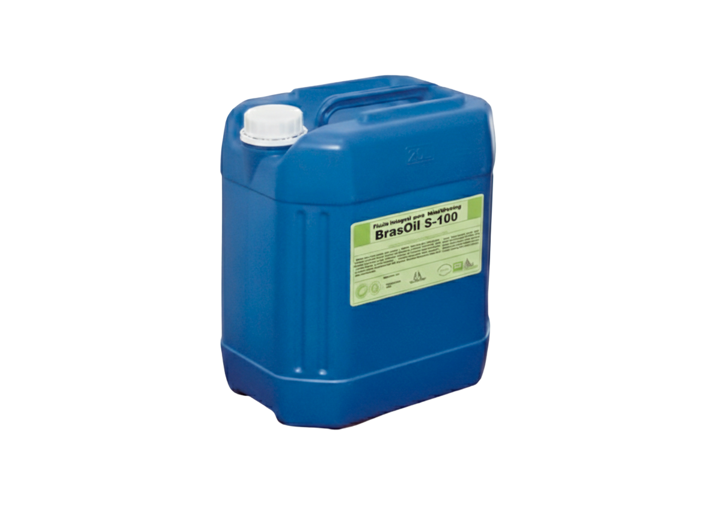
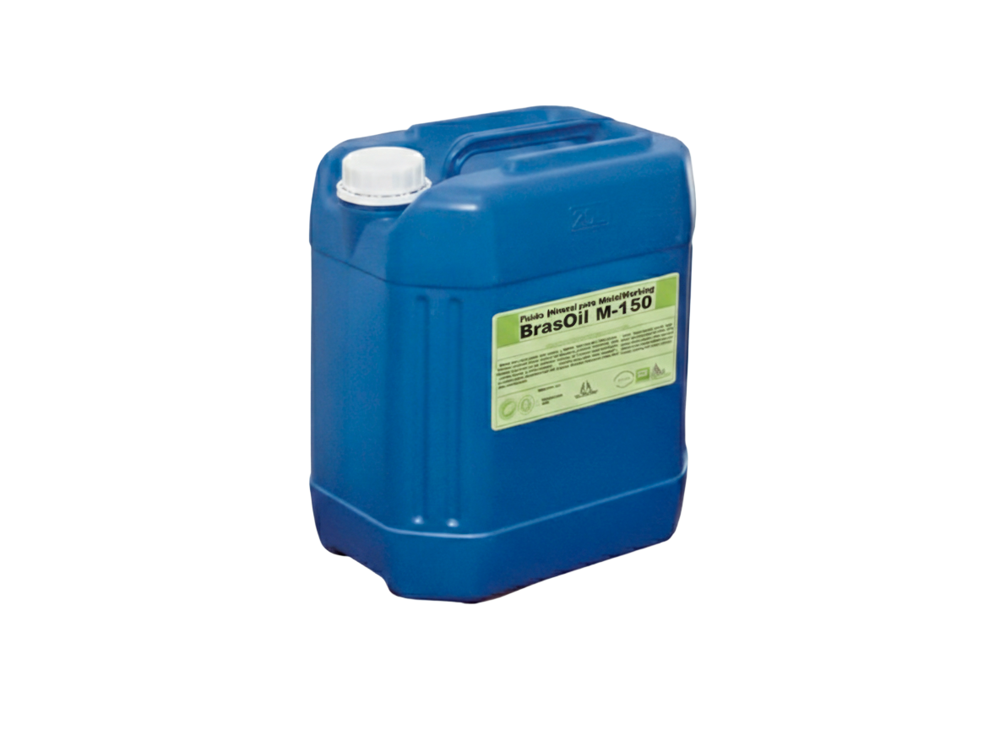

Sintéticos
Formulados com base polimérica, os fluidos sintéticos Oilbras oferecem máxima biodegradabilidade, estabilidade de solução e controle microbiológico — ideais para operações de precisão.



BRASOIL S 70
Fluido biodegradável que proporciona longa vida útil à solução, com alta lubricidade e proteção anticorrosiva. Indicado para todos os tipos de usinagem, especialmente em metais amarelos.
Solicitar OrçamentoBRASOIL S 30
Fluido sintético solúvel em água para corte de metais, formulado com base polimérica e isento de óleos minerais e vegetais, caracterizando-se como um produto 100% biodegradável.
Solicitar OrçamentoBRASOIL S 30 Plus
Fluido sintético para usinagem de metais, totalmente solúvel em água e isento de Boro, indicado para aplicações que exigem maior controle ambiental e estabilidade do processo.
Solicitar OrçamentoBRASOIL S 40
Fluido para usinagem em múltiplas aplicações, com elevada resistência à contaminação, proliferação de bactérias e outros micro-organismos, além de alta resistência à formação de espuma.
Solicitar OrçamentoBRASOIL S 40 EX
Fluido formulado com polímeros de glicóis, que oferece alta lubricidade, estabilidade térmica, baixa formação de espuma e excelente proteção anticorrosiva. Indicado para operações com ferramentas de aço de alta liga.
Solicitar OrçamentoBRASOIL EP 200
Fluido de origem vegetal de alto desempenho, que oferece boa lubricidade e elevado poder de refrigeração. Indicado para todos os tipos de usinagem.
Solicitar OrçamentoBRASOIL S 2000
Fluido com alta lubricidade e excelente capacidade de refrigeração, indicado para todos os tipos de usinagem. Auxilia na limpeza do equipamento e forma uma película protetora nas peças.
Solicitar OrçamentoBRASOIL S 3000
Fluido para usinagem que oferece excelente lubricidade, refrigeração e maior vida útil da solução. Indicado principalmente para metais não ferrosos.
Solicitar OrçamentoSemissintéticos
Combinam o poder de refrigeração dos sintéticos com a lubricidade dos óleos, formando soluções translúcidas de alto desempenho para operações gerais de usinagem.

BRASOIL SS 50
Fluido semissintético totalmente solúvel em água, indicado para todos os tipos de metais e operações de usinagem. Forma soluções translúcidas com baixo grau de espuma e elevada capacidade de refrigeração.
Solicitar OrçamentoBase Vegetal
Formulados com ésteres vegetais selecionados, oferecem excelente lubricidade e acabamento superficial superior, com menor impacto ambiental.

BRASOIL V 400
Fluido de base vegetal indicado para usinagem de todos os tipos de metais. Formulado com ésteres selecionados e aditivos de extrema pressão, proporcionando excelente acabamento superficial.
Solicitar OrçamentoIntegrais
Óleos integrais de corte, sem diluição em água, para operações de usinagem severa onde a máxima lubricidade e proteção da ferramenta são essenciais.

BRASOIL S-100
Fluido integral para corte de metais ferrosos, formulado com aditivos de extrema pressão e óleos básicos selecionados. Proporciona elevada proteção ao equipamento e maior vida útil das ferramentas.
Solicitar OrçamentoMinerais Solúveis
Emulsões de base mineral de alta estabilidade, que aliam lubricidade e refrigeração para operações convencionais de usinagem com excelente custo-benefício.

BRASOIL M-150
Fluido de base mineral solúvel em água, que forma emulsão leitosa estável. Proporciona elevada lubricidade, reduz o atrito e contribui para melhor desempenho nas operações de usinagem.
Solicitar Orçamento